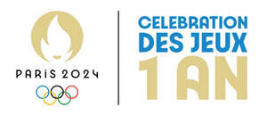

Trade Mark Journal No.2025/028 11 July 2025
UK00004218833 13 June 2025 (9,35,41)

Colour Claim: Gold, Blue, Yellow, Black, Green and Red.
- Class 9
- Scientific research and laboratory apparatus, educational apparatus and simulators; Apparatus, instruments and cables for electricity; Downloadable and recorded content; Information technology and audio-visual, multimedia and photographic equipment; Navigation, guidance, tracking, targeting and map making equipment; Optical devices, enhancers and correctors; Measuring, detecting, monitoring and controlling equipment; Recorded data files; Downloadable multimedia files; Downloadable emoticons for mobile telephones; Databases; Pre-recorded compact discs; Media content; Software; Prerecorded data carriers for use with computers; Sunglasses; Parts for spectacles; Fashion eyeglasses; Frames for spectacles and sunglasses.
- Class 35
- Business assistance, management and administrative services; Advertising, marketing and promotional services; Retail services connected with stationery; Retail store services in the field of clothing; Retail services in relation to computer software; Retail services in relation to computer hardware; Retail services in relation to foodstuffs; Retail services in relation to clothing; Retail services in relation to sporting equipment; Retail services in relation to beer; Retail services in relation to non-alcoholic beverages; Retail services in relation to bags; Retail services in relation to alcoholic beverages (except beer); Retail services in relation to dietary supplements; Retail services in relation to jewellery; Retail services in relation to dietetic preparations; Retail services in relation to stationery supplies; Retail services in relation to sporting articles; Retail services in relation to games; Retail services in relation to toys; Retail services in relation to beauty implements for humans; Retail services in relation to time instruments; Retail services in relation to headgear; Retail services connected with the sale of clothing and clothing accessories; Retail services in relation to fashion accessories; Retail services relating to sporting goods; Retail services via global computer networks related to foodstuffs; Retail services via global computer networks related to non-alcoholic beverages; Retail services in relation to wearable computers; Retail services in relation to downloadable music files; Retail services in relation to downloadable electronic publications; Affiliate marketing; Preparing audio-visual presentations for use in advertising; Outdoor advertising; Banner advertising; Blogger outreach services; Promotion of sports competitions and events; Digital marketing; Analysis of advertising response and market research; Market campaigns; Assistance in product commercialization, within the framework of a franchise contract.
- Class 41
- Arranging and conducting of sports competitions; Arranging and conducting e-sports competitions; Education, entertainment and sport services; Ticket reservation and booking services for education, entertainment and sports activities and events; Translation and interpretation; Publishing, reporting, and writing of texts; Educational services relating to physical fitness; Training of sports players; Consultancy relating to physical fitness training; Advisory services relating to the organisation of sporting events; Providing sports entertainment via a website; Providing sports facilities; Coaching; Providing facilities for sporting events, sports and athletic competitions and awards programmes; Sporting services; Provision and management of sporting events; Sports instruction services; Conducting of sports events; Conducting running races; Sporting results services; Providing information about sporting activities; Health and fitness training; Arranging and conducting of sports events; Consultancy and information services relating to arranging, conducting and organisation of symposiums; Consultancy and information services relating to arranging, conducting and organisation of conferences; Consultancy and information services relating to arranging, conducting and organisation of congresses; Exhibition services for entertainment purposes; Exhibition services for educational purposes; Conducting of live esports events; Conducting of exhibitions for entertainment purposes; Arranging and conducting competitions; Arranging of exhibitions for cultural or educational purposes; Organising of exhibitions for entertainment purposes; Arranging of exhibitions for training purposes; Organization of electronic sports competitions; Organising of esports activities; Organisation of esports events; Organisation of games and competitions; Organisation of sports tournaments; Providing will-call ticket services for entertainment, sporting and cultural events; Ticket procurement services for sporting events; Booking of seats for shows and sports events; Ticket agency services [entertainment]; Ticketing and event booking services; Ticket information services for entertainment events; Ticket information services for esports events; On-line ticket agency services for entertainment purposes; Arranging for ticket reservations for shows and other entertainment events; Ticket reservation and booking services for esports events; Multimedia publishing of magazines, journals and newspapers; Multimedia publishing of books; Multimedia publishing; Journalism services; Publication of texts and images, including in electronic form, except for advertising purposes; Issue of publications; Publication of texts, other than publicity texts; Publication of texts; Publication of printed matter and printed publications; Publication of printed matter in electronic form on the Internet; Publication of printed matter, also in electronic form, except for advertising purposes; Publication of printed matter, other than publicity texts, in electronic form; Publication of calendars of events; Electronic publication of texts and printed matter, other than publicity texts, on the Internet; News syndication reporting; Electronic desktop publishing; Providing electronic publications; Providing online newsletters in the fields of sports entertainment; Providing user rankings for entertainment or cultural purposes; Provision of video recording studio services; Music publishing services; Editing of printed matter containing pictures, other than for advertising purposes; Electronic text publishing services; Creation [writing] of podcasts; Digital video, audio and multimedia entertainment publishing services; Publication of multimedia material online; News programming services for transmission across the internet.
Comité International Olympique
Representative: Bird & Bird LLP